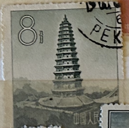
| SOURCE | TITLE| IMAGE MATCH | click to source page |
| eBay | Postage Stamp of CHINA Used A29P36F37445 | eBay | 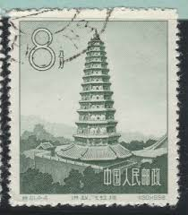 |
| Find Your Stamps Value | Ancient Pagodas: Flying Rainbow Pagoda, Shansi - 中国古塔建筑艺术: 洪赵·飞虹塔, 山西8f Deep green stamp price, value | 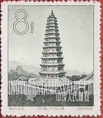 |
| eBay | 1958 - China / PRC Ancient Chinese Flying Rainbow Pagoda 8 分 Stamp Used Mi#CN368 | eBay | 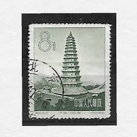 |
| eBay | China 1958 - Mint stamps issued without gum. Mi nr.: 365/366 ..... (VG) MV-14521 | eBay | 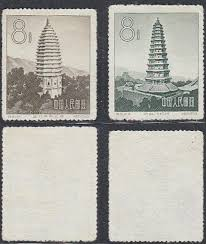 |
| eBay UK | Architecture Chinese Stamps for sale | eBay UK | 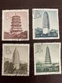 |
| Wikipedia | File:Songyue Pagoda.jpg - Wikipedia | 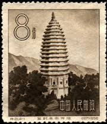 |
| Xabusiness.com | 1958 China Stamps | 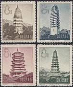 |
| Wikimedia.org | File:Te21, 4-1, Pagoda of Songyue Temple in Dengfeng, 1958.jpg - Wikimedia Commons | 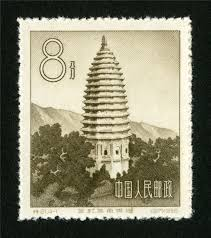 |
| Colnect | China, People's Republic : Stamps [Year: 1958] [1/7] : Colnect 📮 | 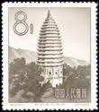 |
| us-china-stamps.com | PR China Stamps 1958 S21 Architectural Art of Chinese Ancient Pagodas 4 sets +3 | 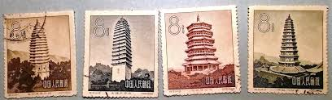 |
| PicClick | CHINA 1962 MEI Lan Fang Stage Art Replica Set $12.00 - PicClick | 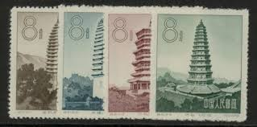 |
| Xabusiness.com | 1994 China Stamps | 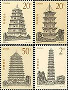 |
| GetArchive | 18 Stamps of china 1958 Images: PICRYL - Public Domain Media Search Engine Public Domain Search | 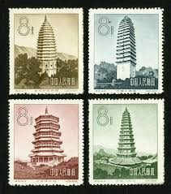 |
| eBay | China 1994-21 Ancient Pagodas Stamps on 1 pair FDC 中国古塔邮票首日封(1对) | eBay | 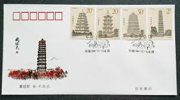 |
| eBay | Architecture Miniature Sheet Chinese Stamps for sale | eBay | 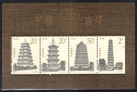 |
| AliExpress | 4 PCS SET Ancient Pagodas Of China 1994-21 China Stamps Postage Collection - AliExpress 15 | 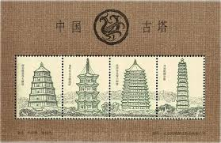 |
| Find Your Stamps Value | Ancient Pagodas: Chienhsun Pagoda, Yunnan - 中国古塔建筑艺术: 大理·千寻塔, 云南8f Prussian blue stamp price, value | 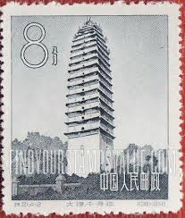 |
| The Philately | China Postage Stamps for Sale at Stampsuoso | 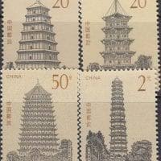 |
| PicClick | CHINA 1958 PEKING Planetarium S23 FDC FIRST DAY COVER $129.00 - PicClick | 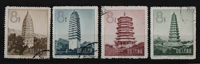 |
| PicClick | CHINA ANCIENT PAGODAS 2 MSs COLOUR VARIETIES 1994 MNH SG#MS3958 $17.64 - PicClick | 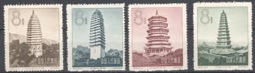 |
| Xabusiness.com | 1994-21 Scott 2545-48 Ancient Pagodas of China - China Stamps | 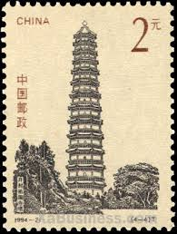 |
| Find Your Stamps Value | Pagodas of Ancient China: Youguo Temple - 中国古塔: 开封祐国寺塔$2 Multicolored stamp price, value | 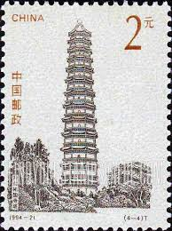 |
| eBay | Postage Stamp of CHINA Used A29P36F37443 | eBay | 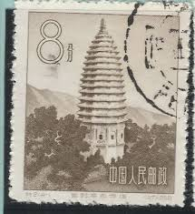 |
| eBay | 1994 China PRC 1994 Ancient Pagodas of China - 4 Stamp Set Souvenir Sheet | eBay | 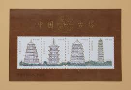 |
| eBay | PRC. 338. S21-2. 8f. Qianxum Pagoda, Dali. CTO. NH. 1958 | eBay | 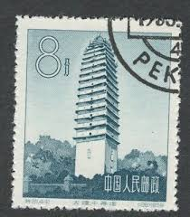 |
| eBay | China 1994-21 SOUVENIOR S/S Ancient Pagoda stamps S/S | eBay | 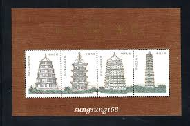 |
| eBay | PR China Stamps S20 Agricultural Cooperation S21 Chinese Ancient Pagodas 特20, 21 | eBay | 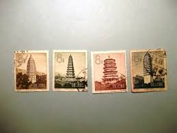 |
| Shutterstock | 35 China Fane Royalty-Free Images, Stock Photos & Pictures | Shutterstock | 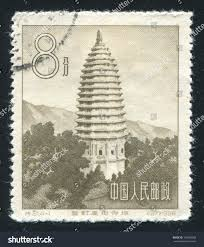 |
| eBay | PRC. 338. S21-2. 8f. Qianxum Pagoda, Dali. CTO. NH. 1958 | eBay | 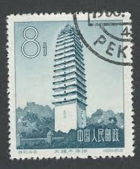 |
| Shields Stamps & Coins | Best Selling products | Stamps & Coin Online Store | Top Picks at Shields Stamps & Coins – Tagged "China" – Page 12 | 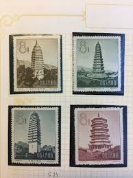 |
| eBay | CHINA PRC 1958 ARCHITECTURE of ANCIENT CHINA PAGODAS S27 (Scott 337-340) MNH | eBay | |
| eBay | PRC. 338. S21-2. 8f. Qianxum Pagoda, Dali. CTO. NH. 1958 | eBay | 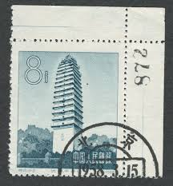 |
| eBay | CHINA PRC 1958 Sc#337-40 S21 Ancient Pagoda Set CTO Used NH VF | eBay | 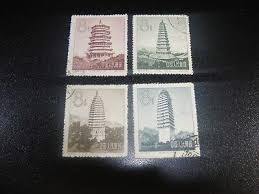 |
| World Buddhist Stamps Gallery | Pagoda of Youguo Temple, Kaifeng :: World Buddhist Stamps Gallery | 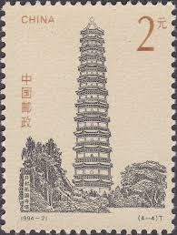 |
| Lighthouse Stamp Society | Stamps – China – People's Republic | Lighthouse Stamp Society | 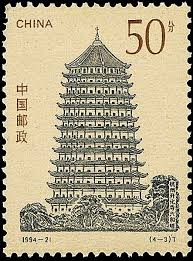 |
| eBay | CHINA PRC Sc#2548a S/S 1994 94-21M Ancient Pagodas MNH | eBay | 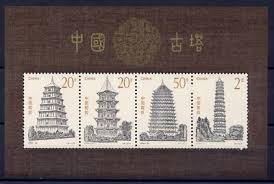 |
| On Verticality | Verticality, Part VI: Archetypes — On Verticality | 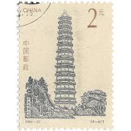 |
| 123RF | CHINA - CIRCA 1994 A Stamp Printed In China Shows A Pagoda, Circa 1994 Stock Photo, Picture and Royalty Free Image. Image 13837918. | 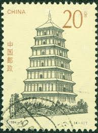 |
| eBay | Postcard China Xi'an Shaanxi "The Famen Temple" Han Dynasty Buddhism MINT Unused | eBay | 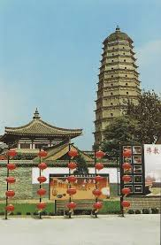 |
| 4StampSales | Cambodia - Chinese Pagodas 8 Stamp Mint Sheet MNH 1881 | 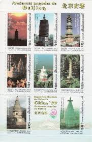 |
| eBay | CHINA PRC 1958 ARCHITECTURE of ANCIENT CHINA PAGODAS S27 (Scott 337-340) MNH | eBay | 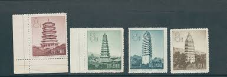 |
| Todocolección | china sello 8 fen. templo. año 1958. 21.4-4 - Buy Antique stamps of China on todocoleccion | 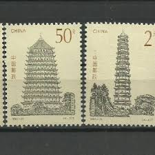 |
| eBay | Uncertified Cambodian Stamps for sale | eBay | 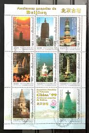 |
| HipStamp | Cambodia 1881 MNH - Architecture, Pagoda, China '99 Exh | Asia - Cambodia, Stamp / HipStamp | 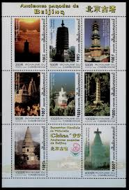 |
| Xabusiness.com | 2009-23 Beijing-Hangzhou Grand Canal - China Stamps | 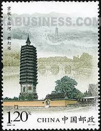 |
| eBay | China 1958 S21 Chinese Ancient Tower Architecture Art First Day Cover Stamp | eBay | 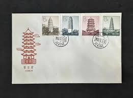 |
| eBay UK | CHINA 1970's BUILDINGS 10 SHEETS PROOFS SPECIMENS MNH -S18331 | eBay UK | 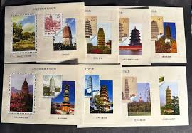 |
| Alamy | CHINA - CIRCA 1994: A stamp printed in China shows Ancient Pagodas of China Dayan Pagoda in Ci'en Temple, Xi'an ,circa 1994 Stock Photo - Alamy | 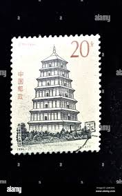 |
| iStock | Chinese Stampchinas Ancient Towers Stock Photo - Download Image Now - Abstract, Aging Process, Antique - iStock | 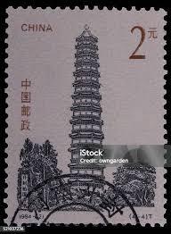 |
| eBay | Ghana 1996 - Pagodas of China - Sheet of 8 Stamps - Scott #1866 - MNH | eBay | 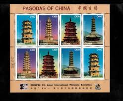 |
| iStock | Chinese Stampchinas Ancient Towers Stock Photo - Download Image Now - Abstract, Aging Process, Antique - iStock | |
| eBay | GHANA 1866b - China '96 Exhibition "Kaiyun Siu Temple, Hebei" (pa20815) | eBay | |
| pan-view.com | danbaizhaopian | |
| Alamy | Youguo temple hi-res stock photography and images - Alamy | |
| iStock | Great Wall Of China Stock Photo - Download Image Now - Postage Stamp, Great Wall Of China, Ancient - iStock | |
| eBay | Postage Stamp of CHINA Used A29P36F37444 | eBay | |
| iStock | Sello Chino China Ancestral Torres Foto de stock y más banco de imágenes de Abstracto - Abstracto, Anticuado, Antigualla - iStock | |
| eBay | China PRC #Mi2583a MNH 1994 Dayan Pagoda Cien Temple [2545] | eBay | |
| eBay | CHINA Pagodas of Ancient China MNH souvenir sheet | eBay |
{kind=link}
{kind=link}